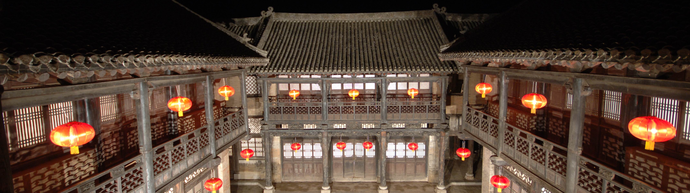

柳氏民居
柳氏民居，位于山西晋城市沁水县境内，为唐代大诗人柳宗元的后人祖籍沁水的陕西华昌府通判柳遇春的故居。创建于明嘉靖二十九年(1550年)。院中一石牌坊迎风板上尚存有楷书题迹：“明嘉靖二十九年庚戌冬十月立”。从现存民居建筑形制、风格上看，清代屡有修葺、增建。建筑坐北朝南，南北长84米，东西宽48米，占地面积4032平方米，总计房屋114间。院落分为两组，以东西走向的村中街道为中线，南北两侧并列两院。原建筑有13座院落，现仅存4座。除两座石牌坊为明代所建，其余皆为清代建筑。民居平面布局分单进、两进，建筑形制多为悬山和硬山式。以村中街道划分，南北两面对称分布，建筑布局紧凑。南院后墙以东西为轴线，建过街楼。各院门额以楷书题院名，四院均为封闭型四合院。保存完整并具有代表性的院落是“司马第院”，坐北朝南，两进四合院，中轴线上依次有倒座、正房、上房。前后院东西两侧各建有厢房，硬山式屋顶，院门位于东南角，单开板门一道。正房面宽三间，进深六椽，单檐悬山顶，二层楼阁式。下层设楼板，东次间设楼梯可达上层。其余院落中上房、正房等形式相同，同为一个时期遗物。院内两座石牌坊，青石筑成，二柱单楼悬山式。迎风板两块。一坊题“丹桂传芳”，一坊题“青云楼武”。有明嘉靖二十九年修建题记。
大唐文兴柳宗元遗族世居——柳氏民居历史文化旅游区，位于山西省晋城市沁水县西文兴村，太行、王屋、中条三山环抱，为国家4A级景区、中国历史文化名村、全国重点文物保护单位。明永乐四年，柳宗元遗族耕读发家，始造河东柳氏府邸一进十三院，占地三万多平米，是中国目前唯一以同祖血缘世代聚居的原始古村落。古民居建筑工艺高超，风格独特，融明清建筑艺术精华为一体，集南北建筑风格于一身，同时异常巧妙地将皇宫建筑工艺运用到民间，真实地记载了中国百世书香文人做官的历史，深刻地揭示了明代“官而商”到清代”商而官”的社会发展史，实为中华古民居建筑艺术之绝品。